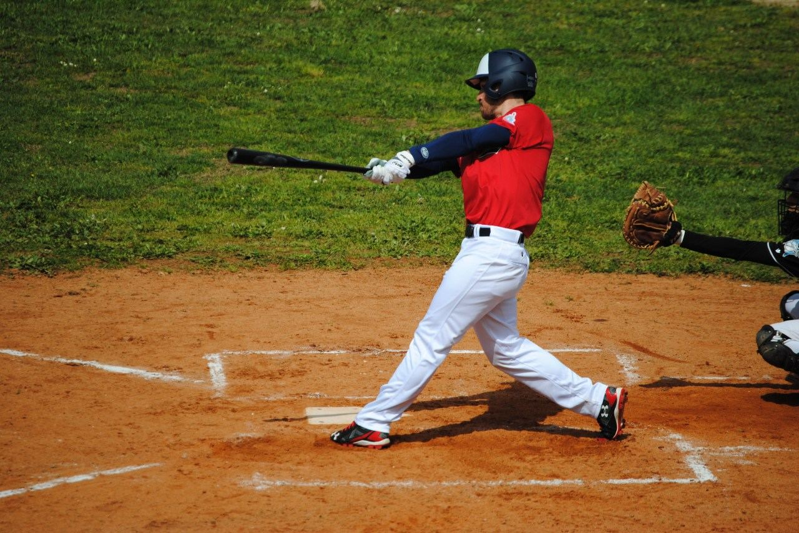
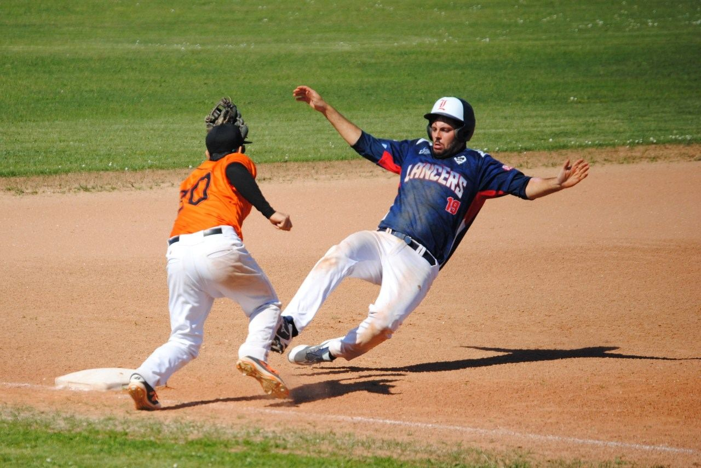

Le partite casalinghe di domenica 29 Aprile hanno regalato ai Lancers un’altra doppia vittoria (terza quest’anno), questa volta ai danni di un giovane Cupra.
Entrambe le formazioni si presentavano all’appuntamento con importanti assenze: tra le file dei lastrigiani stop forzati causa infortunio per Albano, Menoni, Cano e Bini; Pistol e Guasti assenti per lavoro.
Pertanto, lo staff tecnico ha dovuto affrontare la quarta giornata con soli tre pitcher di ruolo e senza alcuna riserva disponibile chiedendo alla squadra un grande sforzo.
La risposta dei Lancieri è stata un’altra grande prova di carattere e cuore.
Degl’Innocenti, alla sua seconda partenza sul monte di lancio, mette in scena un’altra magistrale prova: 8.1 inning lanciati di grandissimo spessore con 4 strike out e soli 3 punti subiti.
Alla nona ripresa, sul punteggio di 3 a 1 a favore dei lastrigiani, un doppio da 2 punti costa la W (vittoria) sul tabellino per il promettente lanciatore bianco blu; a corto di giocatori, Ciappi, manda a chiudere l’inning all’esperto Morese (designato partente di gara 2).
L’attacco, dunque, si trova a poter chiudere la pratica all’ultimo attacco e non fallisce; con un out Rudaj si porta in terza base grazie ad una battuta valida seguita da un errore ed un’ostruzione della difesa marchigiana.
Per forzare il doppio gioco, a Parrini e Baratella viene concessa la base intenzionale ma non servirà a molto in quanto Rudaj segnerà il punto della vittoria su un lancio pazzo del lanciatore avversario.
Risultato finale al cardiopalma fissato sul 4 a 3.
Totale 10 valide a segno, di cui due ciascuno per Rudaj e Geri; ottima difesa generale con un solo errore commesso.
Morese torna sul monte come partente di gara 2, la partita trova subito la sua direzione al primo attacco Lancers con 3 punti segnati a causa di troppe basi concesse dal pitcher avversario.
I lastrigiani non sono bravi a sfruttare la situazione di vantaggio e nelle riprese successive costruiscono un solo punto. Parziale 4 a 0.

Altre due punti segnati rispettivamente al quinto e sesto attacco del team di Rosellini per l’8-0; Morese chiude con 6 riprese complete lanciate, 0 punti e 5 hit concesse al Cupra; la partita si è protratta sino al nono inning lasciando al veterano Vannuzzi il compito di chiudere definitivamente l’incontro.
Vannuzzi finirà con 3 riprese lanciate, 2 sole valide concesse e altri 4 strike out sul tabellino.
Altre 10 valide colpite dal lineup, due a testa per Reggioli, Baratella e Degl’Innocenti.
Unico neo della giornata l’infortunio di Ortiz in gara 1 che va a sommarsi alla già numerosi lista di infortunati.
I prossimi giorni aiuteranno lo staff a capire meglio come si potrà presentare la squadra alla difficile trasferta di Rimini.
LE ALTRE CATEGORIE
Under 15 battuti in trasferta dallo Junior Firenze per 14 a 3 nonostante una bella prestazione (due doppi giochi); sconfitta a testa alta per la Serie C in casa contro il Salerno per 15 a 12, segnali di crescita costanti per i ragazzi di Gentini e Manuli.